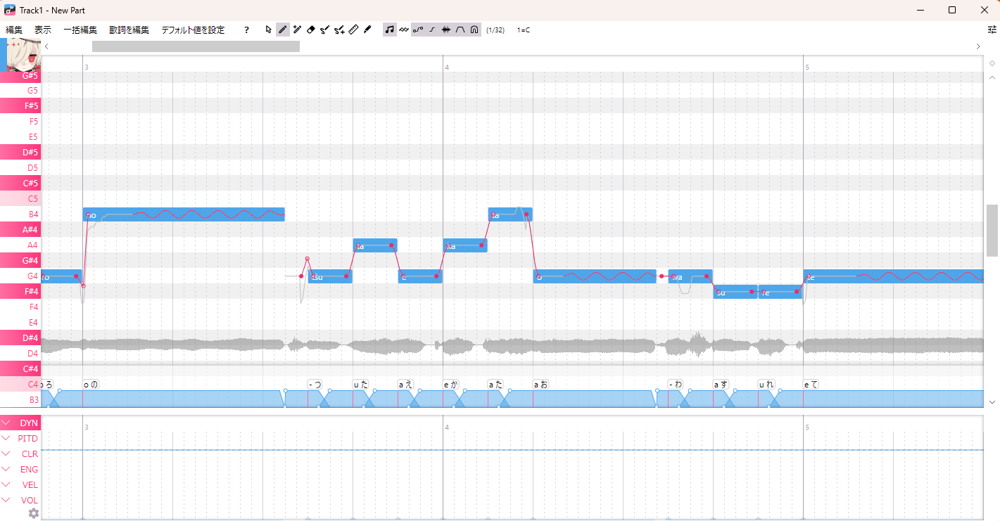
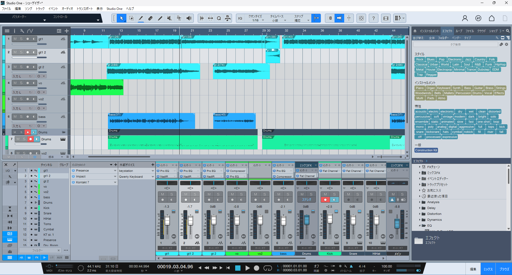
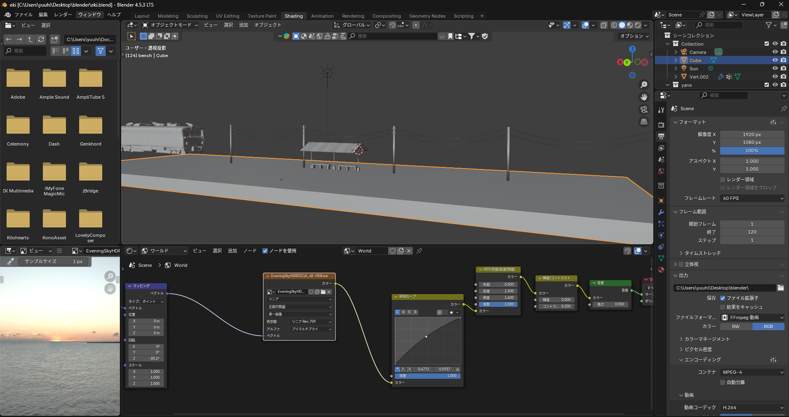
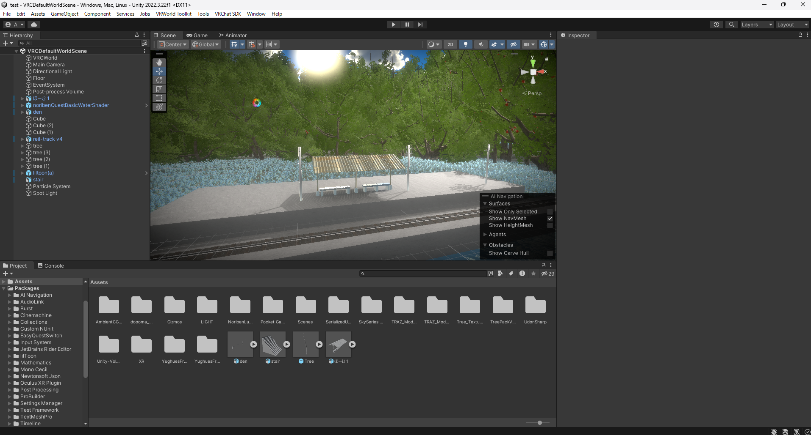

単なる映像鑑賞ではなく、視聴者自身が曲の世界の当事者となる体験を目指した卒業制作です。楽曲制作から3Dモデリング、VR空間構築、インタラクション制御までを一貫して一人で担当しました。動画は、実際にVRゴーグルで見た画面をそのまま録画したものになります。
1. 鑑賞環境の最適化：PCスペックに依存せず高品質な空間表現を実現するため、単体アプリではなくVRChatワールドとして構築。
2. VR酔いの軽減：移動速度やカメラ感度を細かく調整し、ストレスフリーな操作性を設計。
3. ライティング：360度どこを見ても世界観が途切れないよう、視点移動によって破綻しない自然な光と影の演出を構築しました。
音楽表現からVR特有の空間最適化まで、各ツールを横断して体験を作り込みました。

UTAUを用いてボーカルを作成。機械的に聞こえないよう、ビブラートの揺れやコーラスの重なりなど、細部の表現までこだわって調声しました。

Fender Studioの作業画面。ギターとベースは自身で弾いたものを録音し、ドラムは打ち込みで構築。そこにUTAUのボーカルを合わせて全体をミックスしました。

Blenderでの駅の作成画面。一から3Dモデリングを行い、楽曲の持つ雰囲気に合ったエモーショナルな情景を目指して形にしました。

Unityですべてを統合したプロジェクト画面。自作した駅のモデルや、フリーの3Dモデルを用いて世界観を作り、曲の進行に合わせた視点移動やテロップ、空間演出を実装しました。